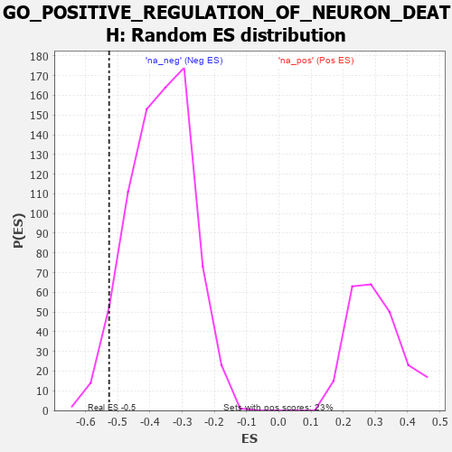

| | | Dataset | 7d |
| Phenotype | NoPhenotypeAvailable |
| Upregulated in class | na_neg |
| GeneSet | GO_POSITIVE_REGULATION_OF_NEURON_DEATH |
| Enrichment Score (ES) | -0.5268422 |
| Normalized Enrichment Score (NES) | -1.4275028 |
| Nominal p-value | 0.05859375 |
| FDR q-value | 0.28286374 |
| FWER p-Value | 1.0 |
Table: GSEA Results Summary
 Fig 1: Enrichment plot: GO_POSITIVE_REGULATION_OF_NEURON_DEATH
Fig 1: Enrichment plot: GO_POSITIVE_REGULATION_OF_NEURON_DEATH
Profile of the Running ES Score & Positions of GeneSet Members on the Rank Ordered List
| PROBE | GENE SYMBOL | GENE_TITLE | RANK IN GENE LIST | RANK METRIC SCORE | RUNNING ES | CORE ENRICHMENT | | 1 | GSK3A | | | 351 | 0.745 | -0.0060 | No |
| 2 | BAX | | | 387 | 0.711 | 0.0260 | No |
| 3 | PITX3 | | | 594 | 0.596 | 0.0306 | No |
| 4 | ELK1 | | | 752 | 0.545 | 0.0388 | No |
| 5 | AIFM1 | | | 1072 | 0.469 | 0.0226 | No |
| 6 | BACE1 | | | 1673 | 0.360 | -0.0345 | No |
| 7 | PAK3 | | | 1889 | 0.322 | -0.0451 | No |
| 8 | REST | | | 2308 | 0.259 | -0.0845 | No |
| 9 | SARM1 | | | 3432 | 0.086 | -0.2215 | No |
| 10 | CDK5 | | | 3480 | 0.080 | -0.2233 | No |
| 11 | PIN1 | | | 3543 | 0.069 | -0.2276 | No |
| 12 | FIS1 | | | 3654 | 0.051 | -0.2389 | No |
| 13 | NF1 | | | 3713 | 0.040 | -0.2441 | No |
| 14 | DAXX | | | 3722 | 0.038 | -0.2432 | No |
| 15 | PARP1 | | | 4014 | -0.010 | -0.2793 | No |
| 16 | MTOR | | | 4114 | -0.025 | -0.2905 | No |
| 17 | ABL1 | | | 4125 | -0.027 | -0.2904 | No |
| 18 | SRPK2 | | | 4790 | -0.155 | -0.3661 | No |
| 19 | FBXW7 | | | 4816 | -0.161 | -0.3610 | No |
| 20 | CLU | | | 4889 | -0.174 | -0.3611 | No |
| 21 | ATM | | | 5210 | -0.249 | -0.3886 | No |
| 22 | SSH1 | | | 5254 | -0.258 | -0.3808 | No |
| 23 | CASP8 | | | 5678 | -0.369 | -0.4152 | No |
| 24 | EGR1 | | | 6165 | -0.527 | -0.4494 | No |
| 25 | CDC42 | | | 6236 | -0.548 | -0.4301 | No |
| 26 | GSK3B | | | 6719 | -0.768 | -0.4514 | No |
| 27 | GRN | | | 7319 | -1.194 | -0.4656 | Yes |
| 28 | KMO | | | 7432 | -1.308 | -0.4127 | Yes |
| 29 | CASP2 | | | 7442 | -1.322 | -0.3460 | Yes |
| 30 | GRIK2 | | | 7552 | -1.471 | -0.2843 | Yes |
| 31 | CASP3 | | | 7747 | -1.902 | -0.2112 | Yes |
| 32 | GRIK5 | | | 7792 | -2.044 | -0.1120 | Yes |
| 33 | FYN | | | 7881 | -2.622 | 0.0113 | Yes |
Table: GSEA details [plain text format]

Fig 2: GO_POSITIVE_REGULATION_OF_NEURON_DEATH: Random ES distribution
Gene set null distribution of ES for GO_POSITIVE_REGULATION_OF_NEURON_DEATH